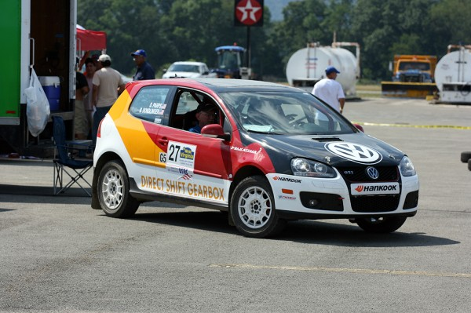
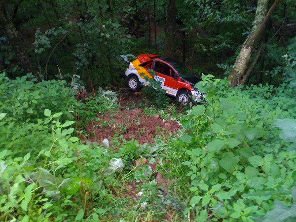
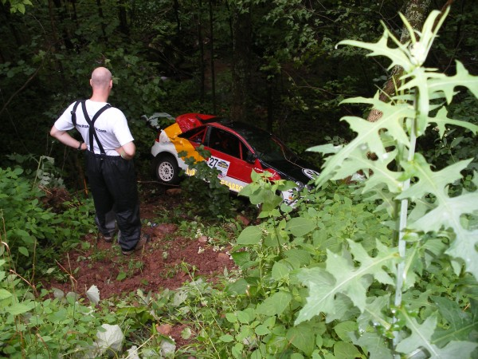
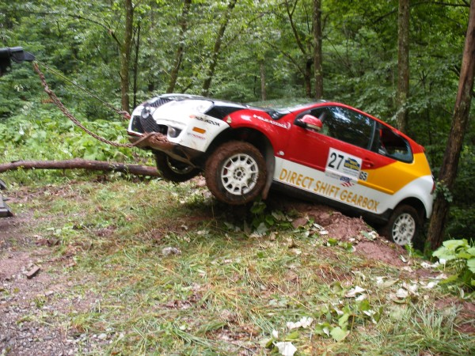

Danza del Sol
Thanks to Danza del Sol winery for having sponsored MaxAttack!
No Coast Motorsports
Thanks to No Coast Motorsports for having provided video coverage of MaxAttack!
Alex Gelsomino
Thanks to Alex for having provided prizes to rookie co-drivers in MaxAttack!
ComicOzzie
Thanks to Jerry Winker for having provided photos for our site.
Frozen Motion Photos
Thanks to Lorne Trezise for having provided photos for our site.
On A Limb Racing
Thanks to Pete Kuncis for having provided photos for our site.
O'Neil Rally School
Team O’Neil Rally School is the premier rally driving school in the United States.
MaxAttack! raised the level of two wheel driverally racing in the United States for the past few years. Thanks to the generous support of our sponsor during those years, Danza del Sol Winery in Temecula Valley, California, the Rallysports Group of America (RSGA) paid out a cash purse of $15,000 USD per year to be divided amongst the fastest teams competing in the MaxAttack! events.
Duke R&P Débuts New GTI-Rally Car and Has Spectacular Finish!
Elkins, WV – The Duke Rally Team headed east to compete in the Rally West Virginia (http://www.rallywv.com/) for the first time ever, which is located in the Allegheny Mountain Range. Another first is the brand new ride. That's right; we have traded up to a Volkswagen GTI with the Direct Shift Gearbox. This car was treated to a Chip Lasky designed paint job that Shawn Czuppa laid on it. Everyone loved the paint job and we had lots of positive comments throughout the weekend.

We started the first stage at about a 60% pace, as this was the debut for the car at a rally that was new to us. Our initial impressions were that the car was much faster than the previous one and we were enjoying the benefits of the Direct Shift Gearbox. This is basically two parallel, manual transmissions. While one transmission is in 1st gear, the second transmission has preselected 2nd gear. You push the paddle shifter and the clutch from transmission #1 disengages, and the clutch from transmission #2 engages. Shifts are accomplished in ~200 milliseconds (blink of an eye is ~300 milliseconds), and you don't have to take your hands off of the wheel to shift. This is similar to systems seen in the World Rally Championship and in Formula 1.
As the day wore on, our confidence in the car and its initial setup increased. We picked up the pace, and then on the seventh and final stage of the day, we ran out of talent as the saying goes. We came into a steep down hill, followed by a hairpin right turn. We were carrying pretty good speed, but hit a large washout in the middle of the road. This bounced the car up in the air which prevented braking or steering inputs, and sent us straight towards the side of the road. We hit a berm as we were exiting the road, and flipped end-over-end off the cliff! We came to rest against a tree about fifty feet down a sixty degree embankment. Fortunately, we weren't hurt. The roll cage and HANS device did their jobs, and we weren't even sore the next day. We later found out that this corner caught several people by surprise, and one of the RallyMoto guys also departed the road there.

As you can imagine, this was a crushing blow for the debut of the new car. We were running 6th of 19 total in the MaxAttack! Triple Crown Series even with our conservative pace. We were 13th of 33 overall in the rally. The good news is that there were three photographers on the corner, and they caught it all on video:
The car is fixable, as the roll cage and suspension are straight. I will need a new roof, hatch and side panels, though. The car is currently at the body shop, but we will not be making the third race of the MaxAttack! series in October. This gives us time to refine the car for the 2009 series.

There were so many people involved in the preparation of the car. Fat Jimmy made an awesome one-piece, six-bend 3" exhaust for the car. The crew at Brooks Stevens Design did an amazing paint job. Mark from CKC Graphics put together an awesome reflective sticker job. Many people helped out in the garage to make this happen: Greg Nelson, Matt VanDyke, Brian Klett, Mike Christopherson, Chris Fredette, George Barton, and Tony Senger.

Our pit crew for this rally was Heidi Dondlinger, Damen Williams, and Chris Gilligan. They each get photo credit for the attached pictures.
Photo Credit:
Heidi Dondlinger
Damen Williams
Chris Gilligan